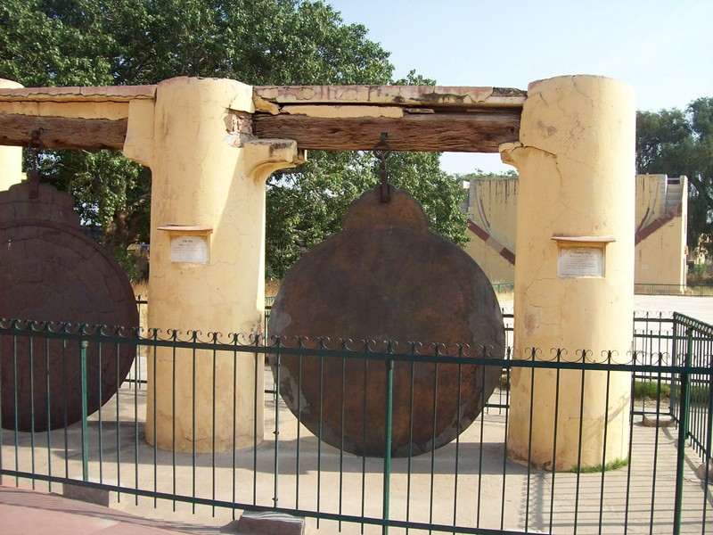
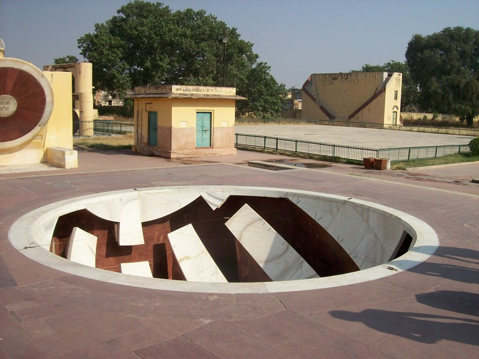
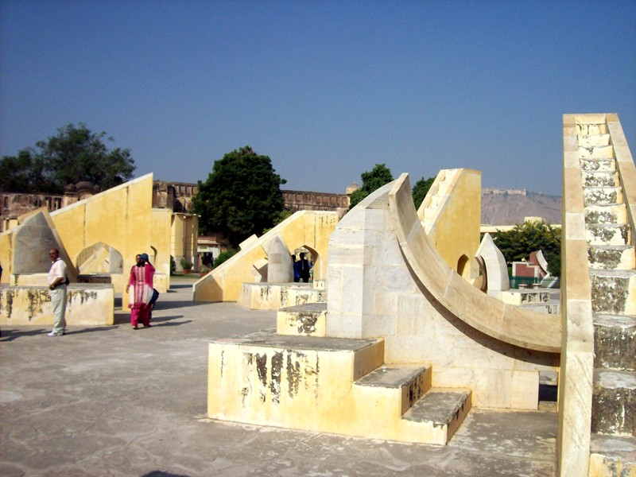
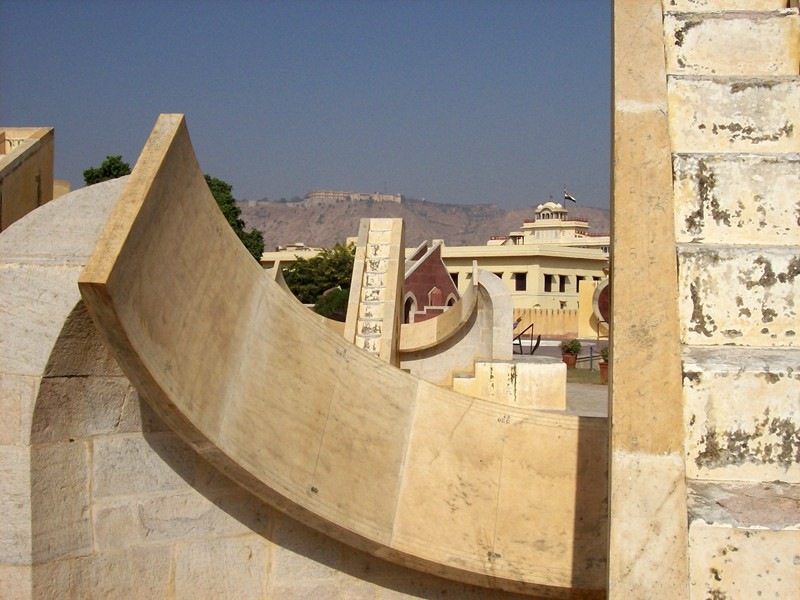
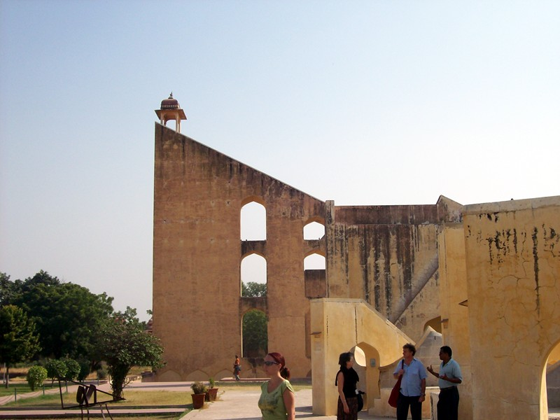
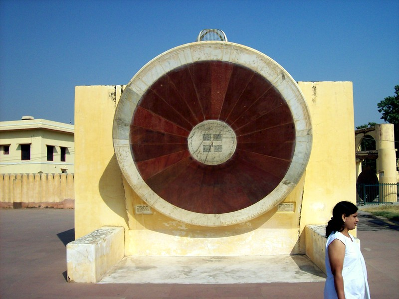

Observatory
The observatory made Jaipur a must-see, despite being a substantial detour from the rest of the trip. King Sawai Jai Singh founded Jaipur in 1727, naming it after himself. Interested in mathematics and astronomy, he published a set of astronomical tables and built five observatories, of which this is the largest. The "forest of stone toys" (as it semed to me) is like an adult Exploratorium. I've pictured less than half of the instruments here.

These large "gongs" are engraved with a 2 dimensional projection of the celestial sphere.
The bowl-shaped bottom is engraved with the constellations. The position of the shadows indicates the Sun's current position in the the celestial sphere.

The forest of stone toys shows at a glance whether the current moment is auspicious or not. There are twelve of these instruments, each valid when the Sun is is the corresponding constellation.

Degrees are inscribed along the marble dial. It's something like even degrees are auspicious, odd degrees are not. Note fort on hill.

The platform provided a lookout for approaching storms. On the back wall is a shadow-casting shape used to determine the sun's declination.

There are two of the sundials, one for summer and one for winter. There are a lot more megalithic instruments--I'd like to see this kind of thing in the Southwest as public art.